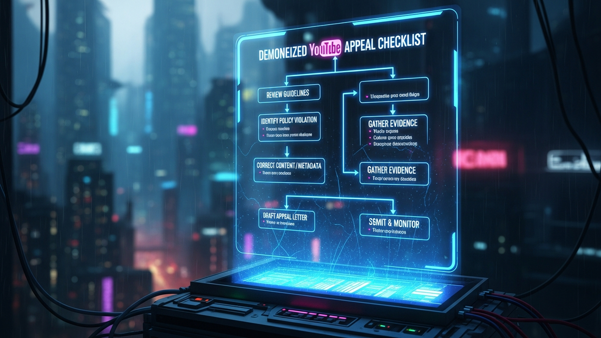

The sudden jolt of a demonetization notification can send a creator's world into a tailspin. One moment, your content is generating revenue; the next, a stark email announces the cessation of your channel's monetization, often citing vague policy violations. This isn't just a financial setback; it's a blow to your creative momentum and a challenge to your understanding of the platform's intricate rules. Panic is a natural first reaction, but it is also the enemy of progress. What you need in this critical moment is not despair, but a precise, actionable strategy—a definitive checklist to navigate the appeal process with speed and efficacy. This comprehensive guide is engineered to arm you with the knowledge, the tools, and the exact steps required to present an unassailable case to YouTube, transforming a moment of crisis into an opportunity for demonstrating unwavering compliance and renewed commitment to the platform's ecosystem. Your journey back to monetization begins with meticulous preparation and an unwavering adherence to a proven methodology, ensuring every aspect of your appeal is optimized for success.
The very first, and arguably most critical, step in successfully appealing a demonetized YouTube channel is to thoroughly deconstruct the notification you received. Many creators make the grave mistake of skimming this email, assuming a generic "reused content" or "spam" violation, and then proceeding with a generalized cleanup. This approach is fundamentally flawed. YouTube's demonetization emails, while sometimes initially appearing vague, often contain subtle clues or explicit mentions that point to the specific policy or even types of content that triggered the action. You must treat this email as a forensic document, meticulously analyzing every phrase, every link, and every implied directive. Your understanding of the "why" will dictate the precision and effectiveness of your subsequent actions.
Begin by locating the official email from YouTube or the notification within your YouTube Studio dashboard. Do not rely on third-party interpretations or forum chatter at this stage. Focus solely on the official communication. Pay close attention to any links provided within the email. These links typically direct you to the specific policy pages that YouTube believes your channel has violated. These could include the overarching Community Guidelines, the more specific AdSense Program Policies (which govern how ads are displayed and what content is eligible), or the Advertiser-Friendly Content Guidelines. Each set of guidelines has distinct implications, and understanding which one applies to your situation is paramount. For instance, a violation of Community Guidelines might relate to hate speech or violence, while an AdSense policy violation could pertain to invalid click activity or artificially inflated engagement. Advertiser-friendly guidelines, on the other hand, might focus on sensitive topics that are unsuitable for most advertisers, even if not explicitly against community rules.
Beyond the primary links, look for any specific examples or timestamps mentioned, however rare they might be. Even if no explicit examples are given, the category of violation (e.g., "reused content" or "repetitious content") should guide your initial audit. "Reused content" often refers to using substantial portions of copyrighted material without significant transformative value, or simply re-uploading content from other creators. "Repetitious content," however, can refer to content you created yourself but which lacks distinct added value, such as multiple videos with very similar themes, intros, or repetitive gameplay footage without commentary. The distinction is critical because the corrective actions for each are vastly different. One requires copyright awareness and transformation, the other demands creative differentiation and unique value proposition.
Furthermore, consider the broader context of your channel's recent activity. Have you recently uploaded a series of videos that deviate significantly from your usual content? Have you experimented with new formats or topics that might push the boundaries of YouTube's policies? Sometimes, a single video, or a cluster of them, can trigger a review and subsequent demonetization, even if the majority of your channel is compliant. By cross-referencing the notification with your recent content strategy, you can begin to pinpoint the exact videos or content patterns that might be the culprits. This initial deep dive into the "why" is not just about identifying the problem; it's about internalizing YouTube's expectations and preparing your mindset for a comprehensive, policy-driven response, rather than a superficial one. Without this foundational understanding, any subsequent appeal will be built on shaky ground, significantly reducing your chances of a swift and successful reinstatement.
Once you've meticulously dissected the demonetization notification and gained a clear understanding of the alleged violations, the next phase demands immediate, decisive action. This isn't a moment for contemplation or procrastination; YouTube's appeal process often operates on a strict timeline, and demonstrating prompt corrective action is a powerful signal of your commitment to compliance. Your immediate protocol involves a comprehensive channel audit, strategic content management, and meticulous documentation of every change you implement. This phase is about preparing your channel to be a pristine example of policy adherence before you even think about submitting an appeal.
The cornerstone of your immediate response is a thorough, systematic channel audit. This process involves reviewing every single piece of content on your channel – videos, shorts, live streams, community posts, playlists, and even channel art – against the specific policy guidelines you identified in step one. Do not assume that only recent videos are problematic. Older content, even if previously monetized, can retroactively become non-compliant due to evolving policies or a more stringent review. Start by using YouTube Studio's content section. Sort your videos by monetization status (if available) or by views to prioritize potential high-impact issues. Manually click through each video, watching excerpts and scrutinizing titles, descriptions, tags, and thumbnails. These metadata elements are often overlooked but are frequent culprits in demonetization, especially if they are misleading, spammy, or attempt to game the algorithm.
When you identify problematic content, you have several options: delete, privatize, or edit. Deleting the video is the most definitive action, completely removing it from your channel's public presence. This is often recommended for severe violations like hate speech, explicit content, or blatant copyright infringement. Privatizing the video makes it inaccessible to the public but keeps it on your channel. This can be a viable option for content that is borderline or requires significant re-editing, allowing you to work on it without it impacting your public channel status. Editing the video, where feasible, involves using YouTube's built-in editor or external software to remove offending segments, blur sensitive information, or replace problematic audio. For instance, if a video contains a brief copyrighted music clip, you might be able to remove just that segment. If the issue is "repetitious content," you might need to re-edit to add more commentary, unique perspectives, or significant transformative elements.
Beyond individual videos, extend your audit to other channel elements. Review all playlists to ensure they don't contain any non-compliant videos or have misleading titles. Scrutinize your channel's "About" section and banner art for any inappropriate or policy-violating imagery or text. Pay close attention to your comment sections. While you aren't directly responsible for every comment, a channel overrun with spam, hate speech, or inappropriate discussions can reflect poorly on your moderation efforts. Utilize YouTube Studio's comment moderation tools to filter out potentially offensive comments and take action against repeat offenders. If you've received any copyright strikes or content ID claims, address these promptly, understanding their impact on your channel's overall standing.
Crucially, as you perform this audit and make changes, document everything. Take screenshots of the videos you delete, privatize, or edit. Note down the original titles and descriptions versus the new ones. Create a simple spreadsheet listing the video IDs, the identified problem, and the corrective action taken. This documentation will serve as invaluable evidence in your appeal video and written submission, demonstrating a clear, systematic, and proactive approach to resolving the issues. This immediate, comprehensive cleanup is not just about making your channel compliant; it's about building a compelling narrative for your appeal, proving that you've not only understood the problem but have also taken decisive, tangible steps to rectify it, preparing a pristine foundation for your re-monetization journey.
The appeal video stands as the single most powerful and often decisive element in your demonetization appeal. While written explanations are important, a direct, personal video allows YouTube's human reviewers to connect with you, understand your perspective, and visibly witness the changes you've implemented on your channel. This is your opportunity to demonstrate genuine understanding, remorse, and an unwavering commitment to YouTube's guidelines, transforming what could be a cold, bureaucratic process into a more human interaction. Therefore, crafting a compelling appeal video is not merely a suggestion; it is an absolute imperative for a swift and successful reinstatement.
Your appeal video should be concise, typically under 5 minutes, and ideally around 2-3 minutes. Reviewers have limited time, so every second must count. Begin by clearly stating your channel name and demonstrating that you are the channel owner. Show your face directly to the camera. Authenticity and transparency are key here; hiding your face can inadvertently raise suspicions. Introduce yourself and immediately address the purpose of the video: appealing the demonetization of your channel. State that you have received the notification and have thoroughly reviewed the specific policies mentioned.
Next, you must articulate your understanding of the violation. This is where your initial forensic analysis of the demonetization email becomes critical. Do not simply say, "I understand I violated policies." Instead, specifically state what you believe the issue was. For example, "I understand my channel was demonetized for 'reused content,' specifically due to my earlier videos that incorporated game footage without sufficient transformative commentary and unique value." This demonstrates that you didn't just skim the email; you delved into the specifics and internalized the policy implications. Avoid blaming YouTube, making excuses, or expressing anger. Maintain a professional, respectful, and humble tone throughout. Your goal is to show you've learned from the experience, not to dispute the decision.
Turn your scripts into professional videos automatically. Use code PAVEL20 for 20% OFF!
START CREATING WITH PICTORYFollowing your explanation, provide concrete evidence of the corrective actions you've taken. This is where you can use screen recordings or direct navigation within your YouTube Studio. Show the reviewer specific examples of videos you have deleted, privatized, or edited. If you edited a video, briefly explain what changes were made (e.g., "I removed the copyrighted music segment from this video, as shown here"). If the issue was misleading metadata, show how you've updated titles, descriptions, and tags across your channel. If it was spammy comments, demonstrate your improved moderation efforts or show examples of comments you've removed. Walk the reviewer through your channel, highlighting the cleanliness and policy adherence of your current content. You might say, "As you can see, I've now reviewed all 200 videos on my channel, and any content that did not meet the 'reused content' guidelines has either been deleted or significantly re-edited to add unique commentary and educational value."
Crucially, showcase examples of your compliant content. If your channel was flagged for repetitious content, demonstrate videos that clearly show unique value, diverse topics, and significant creative effort. If it was for advertiser-unfriendly content, show videos that are clearly family-friendly or appropriate for a broad audience. This proactive demonstration reassures the reviewer that your channel now hosts a wealth of content that aligns with YouTube's expectations. Conclude your video by reiterating your commitment to YouTube's Community Guidelines and AdSense Program Policies moving forward. Emphasize that this experience has been a valuable learning opportunity and that you are dedicated to being a responsible and compliant creator on the platform. Thank the reviewer for their time and consideration.
Before uploading, ensure your video has excellent audio quality, good lighting, and a clean background. Speak clearly and confidently. Upload the video as "Unlisted" to your channel; do not make it public. This allows YouTube reviewers to access it without it cluttering your public channel. Practice delivering your points concisely and naturally. The appeal video is your direct line to the human element of YouTube's review process; make it count by being clear, factual, humble, and demonstrably compliant.
While the appeal video serves as your primary visual testimony, the written appeal provides a crucial opportunity to reinforce your message, offer additional context, and present a structured summary of your actions and commitments. This text-based component, submitted via the YouTube Studio dashboard, acts as a formal complement to your video, ensuring that all key points are clearly articulated and readily accessible to the reviewer. It's a chance to consolidate your argument, leaving no room for ambiguity regarding your understanding of the policies and your corrective measures.
Locate the appeal option within your YouTube Studio. This is typically found under the "Earn" section (previously "Monetization") or directly within the dashboard notification regarding your demonetization. You'll usually find a button or link that says "Appeal." Clicking this will lead you to a text box where you can compose your written submission. Be mindful of character limits, as these are often enforced. This constraint necessitates conciseness and clarity, forcing you to distill your message to its most potent form.
Start your written appeal by formally addressing YouTube's review team. Clearly state your channel name and provide a direct link to your unlisted appeal video. This immediate connection between the written and visual components is vital, guiding the reviewer directly to your most comprehensive explanation. For example: "Dear YouTube Review Team, My channel, [Your Channel Name], was recently demonetized. I am submitting this appeal and have prepared a detailed video outlining my understanding and corrective actions, available here: [Link to Unlisted Appeal Video]."
Next, briefly reiterate your understanding of the policy violation. This should mirror the explanation in your video but be more succinct. For instance: "I understand that my channel was flagged for 'reused content' (specifically, YouTube's Reused Content Policy) due to certain older videos that lacked sufficient commentary or transformative value when incorporating third-party footage." This shows you've done your homework and aren't just guessing. Avoid lengthy explanations or justifications; the video is for the detailed narrative.
The core of your written appeal should focus on summarizing the specific, tangible actions you've taken to bring your channel into compliance. Use bullet points for maximum readability and impact. This allows the reviewer to quickly grasp the scope of your efforts. List out categories of actions, such as:
Conclude your written appeal by reiterating your unwavering commitment to YouTube's policies. Emphasize that this experience has deepened your understanding of the guidelines and that you are dedicated to creating original, valuable content that respects the platform's terms. Express gratitude for the review and your hope for reinstatement. Maintain a professional and respectful tone throughout. The written appeal is your final opportunity to solidify your case, providing a succinct, evidence-backed summary that complements your visual testimony and demonstrates your earnest desire to be a compliant and contributing member of the YouTube creator community.
Navigating the demonetization appeal process effectively requires not just understanding the rules and implementing corrective actions, but also leveraging the right tools and resources. YouTube provides a robust ecosystem of features and information designed to help creators manage their channels, understand policies, and, crucially, address issues like demonetization. Familiarity with these essential tools can significantly streamline your audit, enhance your appeal, and foster long-term compliance. Without utilizing these resources, you risk operating in the dark, making the appeal process far more arduous and less likely to succeed.
At the absolute core of your operational toolkit is **YouTube Studio**. This web-based platform is your command center. It's where you'll find the demonetization notification itself, access the appeal submission portal, and manage all your content. Within YouTube Studio, the "Content" tab allows you to sort and filter your videos, making it efficient to identify and review potentially problematic uploads. You can see monetization status, public visibility, and even copyright claims. The built-in video editor in YouTube Studio is invaluable for making quick, precise edits to videos, such as trimming segments, blurring faces or objects, or replacing audio. For instance, if a specific section of a video contains copyrighted music, you can use the Studio editor to remove or replace just that audio track without re-uploading the entire video, preserving its watch time and engagement data... and implement these strategies to ensure long-term success.
In summary, staying ahead of these trends is the key to business longevity and security. By following this guide, you maximize your growth and ensure a stable digital future.
Don't wait for the headlines. Our Private Telegram Channel delivers real-time AI security updates and digital wealth strategies before they go viral. Stay protected. Stay ahead.
⚡ JOIN THE 1% NOWNo sign-up required. Instantly check risks, analyze AI text, or calculate your digital finances.